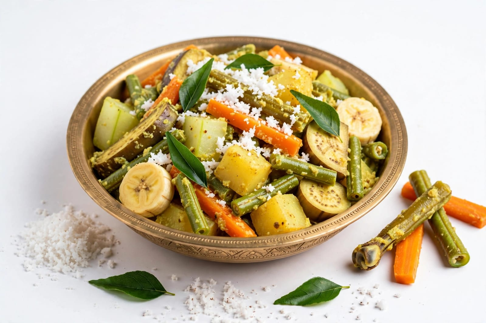
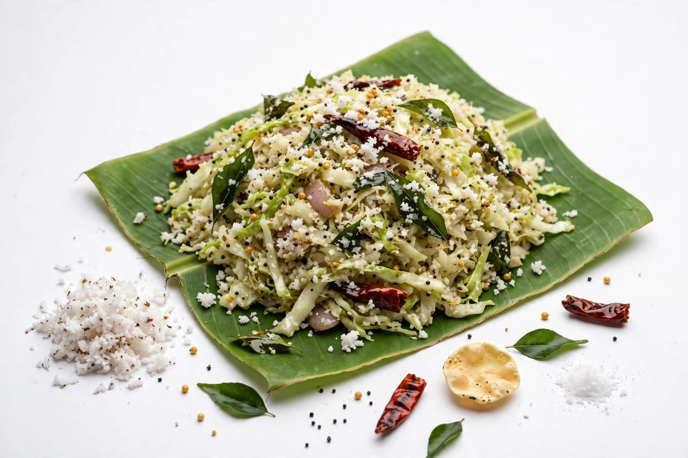
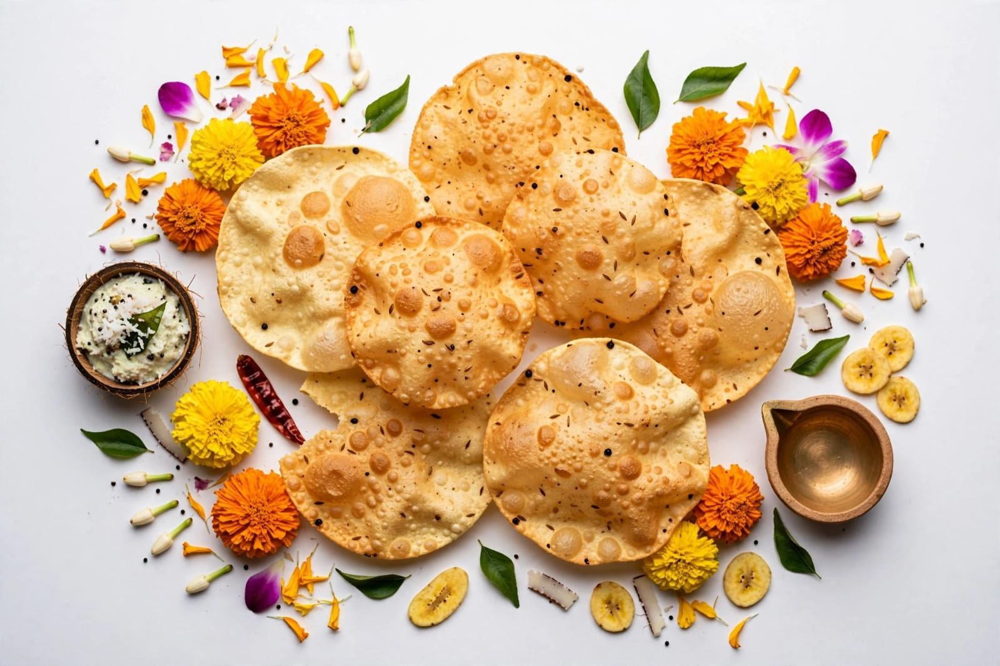

About Onam
Onam is one of the most important festivals celebrated in Kerala. It is a traditional harvest festival of Kerala. Onam is celebrated with great joy and enthusiasm. The festival usually comes during the month of August or September. Onam is connected with the Malayalam calendar. It is celebrated by people of different communities. The festival has great cultural importance in Kerala. Onam is associated with the legendary King Mahabali. King Mahabali is remembered as a kind and generous ruler. People believe that Mahabali visits Kerala during Onam. The festival welcomes the return of King Mahabali. People prepare their homes for the celebration. Houses are cleaned before Onam. Homes are decorated with flowers. Pookalam is an important tradition of Onam. Pookalam is a colourful floral decoration. It is usually made at the entrance of homes. Families create beautiful Pookalam designs together. Different flowers are used to make Pookalam. Onam brings families and friends together. People wear traditional clothes during the festival. Women may wear traditional Kerala sarees. Men may wear traditional white mundu. People visit relatives during Onam. Greetings are exchanged during the festival. Special food is prepared for Onam. The traditional feast is called Onam Sadya. Sadya is served on a banana leaf. Many vegetarian dishes are included in Sadya. Rice is an important part of the Onam meal. Payasam is a popular sweet dish during Onam. People enjoy traditional music and dance. Vallam Kali is an important Onam tradition. Vallam Kali is also known as the snake boat race. Colourful boats participate in traditional boat races. People gather to watch the boat races. Onam creates a joyful atmosphere throughout Kerala. The festival represents unity and happiness. Onam is an important symbol of Kerala's culture.
Onam celebrations continue for several days. The most important day is Thiruvonam. Thiruvonam is the main day of the festival. People wake up early on Thiruvonam. Families clean and decorate their homes. New clothes are worn on the special day. People prepare traditional meals for their families. Onam Sadya is the main festive meal. Sadya contains many different vegetarian dishes. The meal is traditionally served on a banana leaf. Rice is served as the main food. Different curries are served with rice. Avial is a popular dish in Sadya. Sambar is also commonly served. Parippu is another traditional dish. Thoran is prepared with vegetables and coconut. Olan is a traditional Kerala dish. Kalan is another dish served in some Sadya meals. Pickles and chutneys are also included. Papadam is commonly served with Sadya. Payasam is served as a traditional dessert. Different types of Payasam can be prepared. Families enjoy the meal together. People invite relatives and friends for Sadya. Onam promotes sharing and togetherness. Traditional dances are performed during celebrations. Thiruvathira Kali is a traditional dance. Women perform Thiruvathira Kali in groups. Folk songs are sung during Onam celebrations. Cultural programs are organized in many places. Schools may conduct Onam celebrations. Communities organize different cultural activities. Boat races attract many people. Snake boats are long traditional boats. Boat races are held in different parts of Kerala. People cheer for the participating teams. Onam is also a time for games and entertainment. Traditional games are played in some communities. Children enjoy the festive celebrations. Onam brings happiness to people of all ages. The festival strengthens family and community bonds.
Onam has many traditional customs and celebrations. Different parts of Kerala celebrate Onam in their own ways. Floral decorations are an important part of the festival. Pookalam designs become larger during the festival days. Families may add flowers to the Pookalam every day. Temples and public places are decorated during Onam. Traditional performances are organized in many areas. People enjoy music and cultural programs. Shops and markets become busy during the festival. People buy new clothes and gifts for their families. Special foods are prepared in many homes. People share food with neighbours and friends. Onam encourages people to live together peacefully. The story of Mahabali represents a golden period of prosperity. The festival celebrates the values of equality and kindness. People remember the cultural traditions of Kerala. Onam is a time for family reunions. It creates beautiful memories for children and adults. Onam is a colourful and meaningful festival of India.
Special Foods

Avial
Avial is a traditional vegetable dish prepared with coconut and curd.

Thoran
Thoran is a vegetable dish prepared with coconut.

Papadam
Papadam is a crispy side dish commonly served with Onam Sadya.